Introduction to Maya
Maya is a 3D computer Graphic Application which is used in the development of video games, 3D applications, animated films, TV series, and any visual effects. This software can create heavy models, which help us give Ultra 3D effects that create a realistic view at the user end.
The complete name is Autodesk Maya, but it is shortened to “Maya”. This software was previously created by “Alias Systems Corporation”, but Autodesk took all rights under its name. It runs on Windows, MAC OS, and Linux as well
This is a highly developed software with more advanced features explained below
- It has motion graphic features like Additional MASH nodes, 3D type, Motion Graphic toolset.
- It has 3D animation features like Parallel rig evaluation, Geodesic Voxel binding, General animation tools, Time editor etc
- 3D modeling features involved with it are UV editor workflow look and feel, Polygon modeling, Open Subdiv support.
- It has some dynamics and effects like interactive hair grooming, Deep adaptive fluid simulation, Adaptive aero solver in Bifrost etc.
Advantages
It is software which has loads of advantages in Visual field still some of the advantages are mentioned below: –
- It works faster and gives optimum performance to the users.
- Completed work can be checked at a faster speed that saves time.
- It has loads of dynamic effects, which makes you feel that you are live.
- Video Editing task is versatile that I like where we can include clips we want and filter the effects
Maya Tools
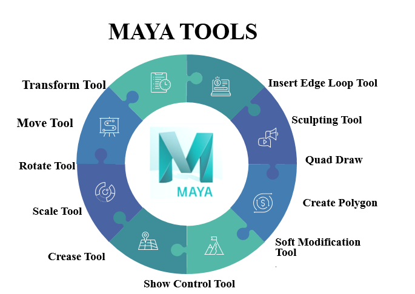Following are some top tools available in Maya to help you with your modelling needs
The Transform Tool
Transform is the first thing you need to know while using Maya. For changing the transform of an item, the tools available in the toolbox are select, move, rotate, and scale. You can utilize the transform tool while you are in the modes of — move, rotate or scale. The hotkeys for them are w, e, and r, respectively. You can freely move or rotate the selected objects by clicking and dragging them. If you choose a particular handle, then the action is limited to that axis alone. You can double click the toolbox icons to access the above move, rotate, and scale tool options.
The Move Tool
The move tool is located in the toolbox. To use it, first choose an object you need to move. Upon selecting it, you will see a controller appeared with four handles. They are used to move the object along each axis and one to move along the planes. Also, the colour changes to indicate that it is active when you select a handle. By default, the colour will be yellow.
The Rotate Tool
3. The Rotate Tool The rotate tool is used to rotate objects in all three axes. Select the rotate tool available in the toolbox and select the object you need to rotate. Now you will notice four rings colour coordinated to XYZ axes. A virtual sphere is also displayed along with the rings. You will know the selected ring by the change in colour. To perform constrained rotations, use X, Y, Z rings. In order to rotate according to the view, use the outer ring. When you start rotating the object, the application rotates it based on the object’s bounding box. If you need to rotate it in fixed increments, you can use the snap option. E.g., if you set the rotation degree to 15, then you can easily rotate the objects in order of 30, 45, 60, and 90-degree positions for better symmetry. The snapping can be only used from the manipulator’s axis handle.
The Scale Tool
Utilize the scale tool to alter the dimension of the items by scaling uniformly in each of the three measurements. You can likewise scale unevenly in one dimension at any given moment. Snap the scale tool symbol in the tool compartment and choose the item you need to scale. Maya shows a scale controller comprising of four handles.
Sculpting Tool
As the name suggests, the sculpting tool allows you to sculpt digital surfaces in 3D, similar to clay sculpting. The process is similar but just replaces the clay with the polygon. There are multiple sculpting options available from the sculpting tool options available under the mesh tools
Rendering Objects
Maya provides a good modeling system called NURBS (Non-Uniform Rational B-Splines). This system is not about creating objects together. It creates objects from curves and surfaces rather than fixed polygons. To do the rendering of any object, we need to add color, material, texture, and lightning to any object. To do that, follow the below steps.
- Step 1:To do that first, import or design the object in Maya. After importing that modal, keep “shading all” and “wireframe on shaded” tick marked 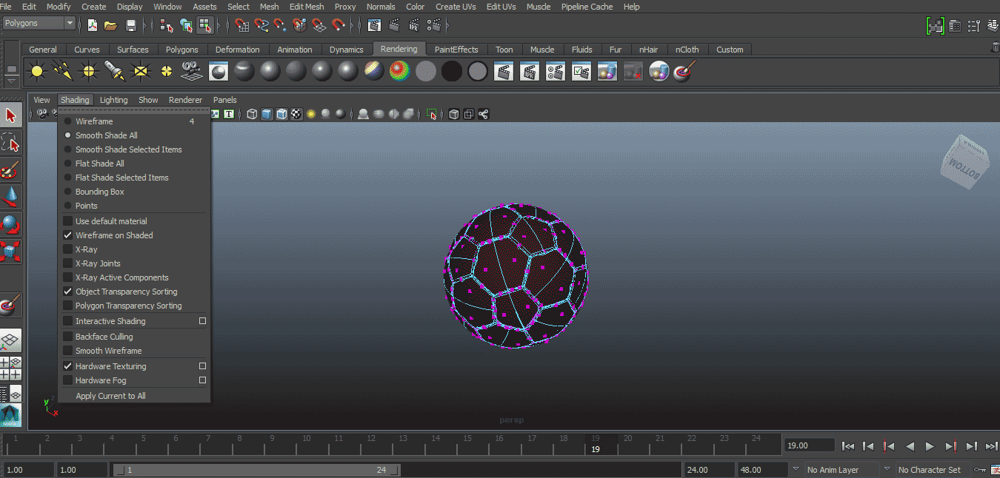
- Step 2: Now, we have to add material on an object; to do so, right-click on an object a pop will appear to click on Assign New Material from the pop-up menu 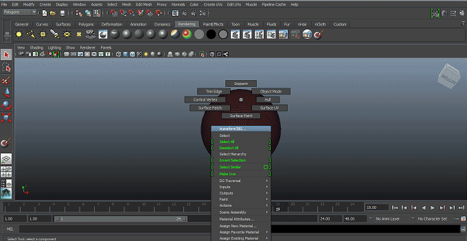
- Step 3: Now select suitable material from the pop-up. Here we have selected Phong from the list.
- Step 4:Attribute list will appear. Select suitable attributes from the list like color, transparency, etc. We will select the color as required. We can drag on the color list to change it according to our will
- Step 5: Now, we can add texture to the object by clicking on the right side of the color box. A pop will appear to select a suitable texture from the appeared window. 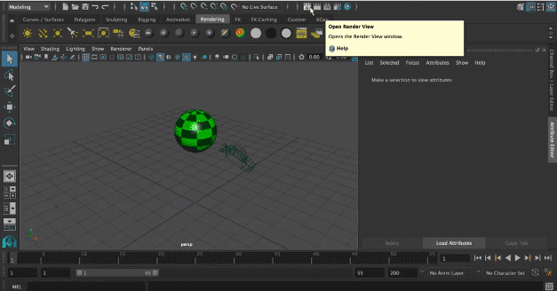
- Step 6:: We can also select suitable shading and lighting for the object from the toolbar appearing on the menu bar.
- Step 7: The next step is to add a camera to the object to illuminate it to get a good quality rendered view. To do that click on create > camera > camera.
- Step 8: Now, we will render the view for that click on Open Render View icon appearing on the top of the screen. 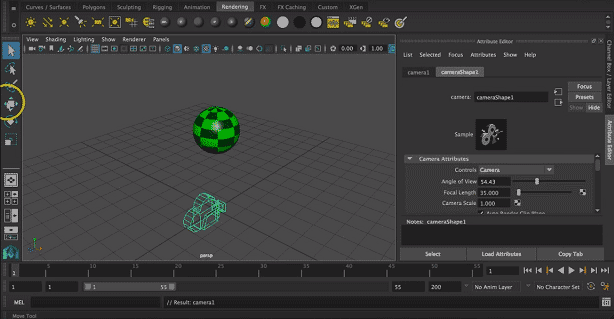
- Step 9:A rendering pop up window will appear on the screen to change the rendering settings.
- Step 10: The final step is to click on the render button to start and complete the task with the above settings.
Rigging
Rigging in Maya is used to give control points to the animator from which the animation can be done. As the actual polygons are not touched, but the controls are used for animation, and to create these controls, we rig the model. Rigging the foundation on which we do animation, so let’s make our foundation strong.
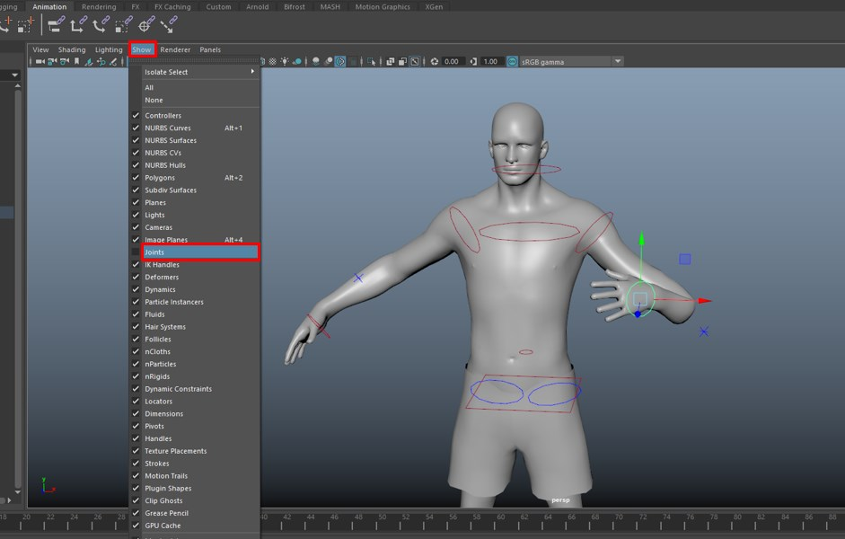
Below is the step to use rigging in Maya:
- Step 1: In this section, we will rig the character using a quick rig tool, but before that, we will see what happens if we directly interact with the geometry.
- Step 2: This will deform the geometry in ways which is undesirable. To avoid this problem, we have to add a skeleton to the model. To do that, first, undo the above changes, and then we will go in the Rigging menu and from there Skeleton > Quick Rig to get a general idea.
- Step 3: Now select the model and click Auto-Rig.
- Step 4:We can see in the outliner the skeleton bones references are added along with the controls; if you cannot see it, open from Windows > Outliner.
- Step 5: What actually happened is that as you can see above, each vertex is controlled by a skeleton, and each is given weights as to which vertices will be influenced by the bones and a value from 0 to 1 will be assigned, which will determine which vertex will follow which join
- Step 6:Grab the handle on the left and drag it to control it. 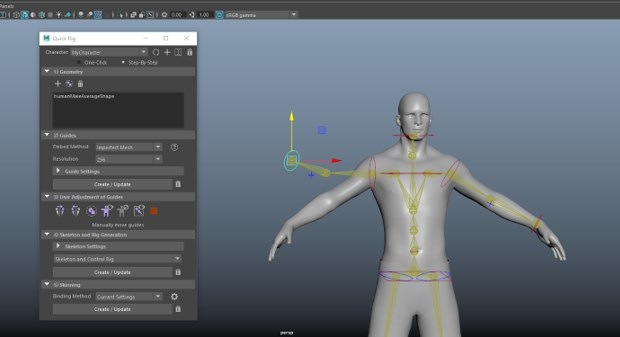
- Step 7:As you can see, when we start dragging, it is not accurate as the joints placed by the quick rig is not accurate, which we will improve later. But when we actually animate the character, we have to hide the bones as the keyframe animations will be done on the controls, not on geometry or joints.
- Step 8:We hide the joints by going in the Show in viewport menu and uncheck Joints which will be the view for the animator. We do the entire process of rigging by keeping the animator in mind.
Animation
Here in this article, we will tell you about Maya animation in a few simple steps with an example and brief you on some important parameters of Maya animation so that you can handle it without any problem. So let us start our learning about this topic in Maya software.
Here I will show you a simple animation example of a ball hitting a series of cuboids to easily understand this feature in Maya software. After this, you can make a complex animation also in this software. Before starting, let us have a look at the working screen for our better understanding
- Step 1: The Menu bar option will change according to changing the method of working from this list.
- Step 2: The Menu bar option will change according to changing the method of working from this list.
- Step 3: Now, draw a plane according to you in the Perspective viewport. You can draw it in any other viewport according to your suitability by pressing a space bar for other viewports. You can adjust the size of the plane by using the Scale command of this software. For Scale command-click on the Scale icon of Manipulating toolbar, or you can press the R button for the handle point of Scale command on your object 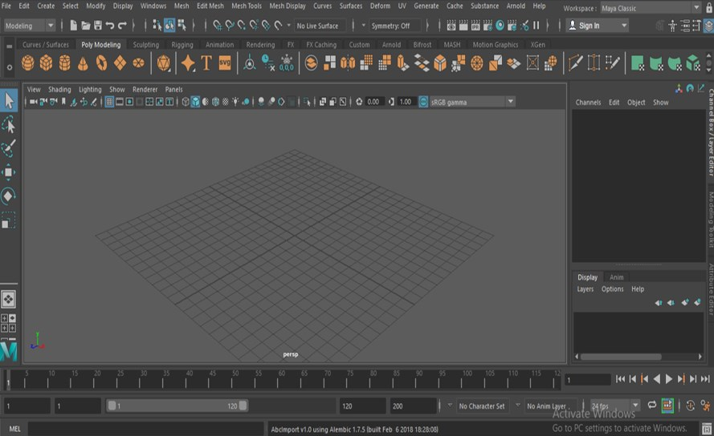
- Step 4:Now, take a Cube command from the quick access toolbar of this software by click on it and draw a cuboid like this.
- Step 5: Now press the Spacebar of the keyboard for all four viewports and adjust the cuboid at the center of your plane by using the move tool command. For the Move tool, click on the move tool icon of the Manipulating toolbar, or you can press W from the keyboard. Now move the object by using arrow handles of this axis..
- Step 6:Now press the keys Ctrl + D, duplicating a copy of this cuboid, and drag it in the forwarding direction.Make a series of cuboids like this by making copies of this cuboid model. 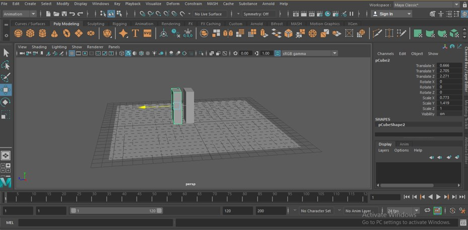
- Step 7: Now, take a Sphere tool command from a quick access toolbar by click on it and draw a sphere like this. You can drag the sphere of any size according to you.
- Step 8: Now select the plane by click on it and choose the FX method from the method of working from this list.
- Step 9:Now go to the Field/Solvers menu of the Menu bar of the FX method. A drop-down list will be open; click on the ‘Create Passive Rigid Body’ option of this list 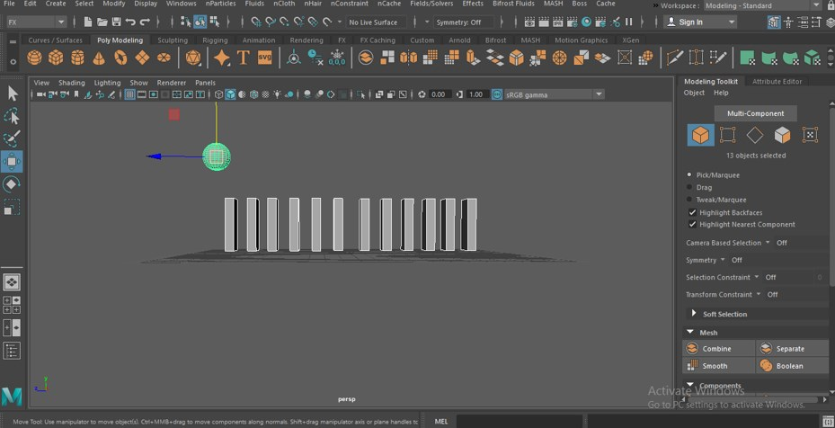
- Step 10: Now, I want the sphere drop on the first cuboid so that I will click on the Gravity option of the drop-down list of Field/Solvers menu of the Menu bar.
- Step 11: Now, we need a proper keyframe for playing our animation. So I will take 200 as the value of the keyframe. You can take it according to you.
- Step 12:Now play the animation by pressing the play button from the lower right end of the working area.
Maya 3D Models
3d models are three-dimensional objects created with x, y, and z-axis respectively. Autodesk Maya is a popular 3D modeling and animation program. The users can create extraordinary 3D models such as character models, architectural models, and basic 3D objects as well.
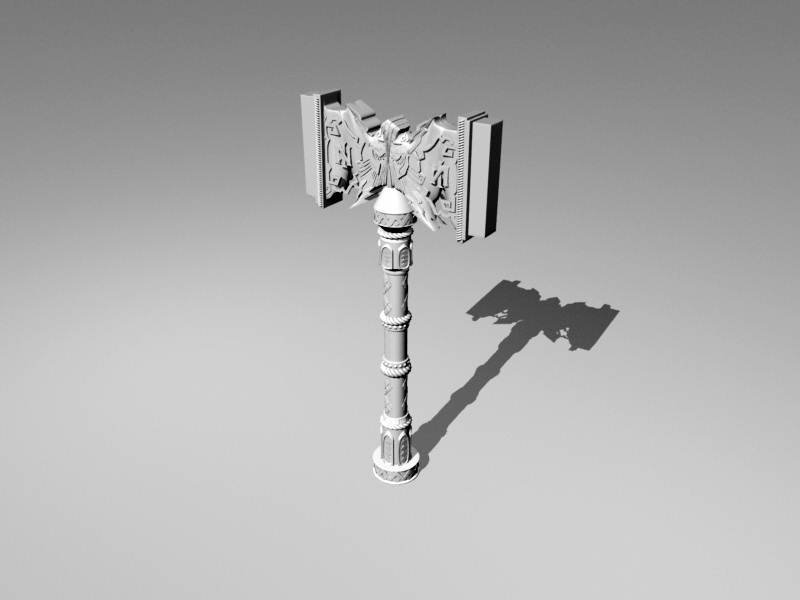
Autodesk Maya supports a number of plugins and features that helps the user to create simple 3d models and objects.
To create 3d models in Maya the users can use three basic functions or tools for the same.
- 1. NURBS: NURBS (Non-Uniform Rational Basis Splines) 3D modeling is based on create smooth objects and are used to create arched surfaces with the help of the Bezier tool. The NURBS polymer modeling is commonly used to create interior and exterior designs and also used in Mechanical Engineering to design automobile 3d models.
- 2. POLYGON: The most basic and the first step in creating any 3D model is with the help of Polygon Modeling. Polygon Modeling is based on simpler mathematical calculations and includes edges, vertices, and faces. The user can create simple models using shapes with this modeling function.
This is the best option for modeling when it comes to modifying or editing the object. The only setback of this sort of modeling is that it works only with rough or hard edges. For smother and curvy edges, the user should use NURBS modeling. - 3. SUBDIVISION SURFACES: These objects use both NURBS and Polygon modeling primitives. These objects have edges, vertices, and also faces but they have curves as NURBS within them. These objects are much more complicated and difficult to create on Maya.With the help of these primitive tools, the user is able to create basic and complex models as required.